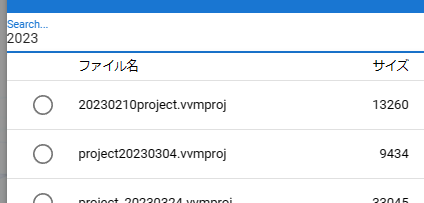

12.6. Loading and saving animations
12.6.1. Save animation project file
Once you have created an animation project, you can save it as a file.
- Saved content:
Timeline (including all keyframes)
Information on all roles
Other settings on the animation project
Materials in the project (including actual files)
Click
Savefrom theAnimationtab of the ribbon bar.
Click
SaveorSave As.
Note
Each OS version has a Terminal menu that allows you to save directly to your PC.
For
Save As, enter a name in the input dialog.
The animation project will be saved in the dedicated storage inside the app or on your PC.
Note
In the case of Save, a confirmation message will be displayed if the project already exists.
After saving, a notification message will be displayed on the upper right.
- Save format:
.vvmproj
Although it is a unique extension, it is actually just a JSON format file.
To download to a PC or terminal, click Open to display the internal storage dialog, then click this button on the toolbar.
12.6.2. Open animation project
You can read the saved project file.
Click
Openfrom theAnimationtab of the ribbon bar.From Fileopens the OS file dialog, andFrom Internal Storageopens the internal storage dialog within the app.
Hint
You can filter projects using the search box at the top of the list.
After selecting the target project, press the
OKbutton.
- What is restored
Timeline (including all keyframes)
Information on all roles
Other settings on the animation project
Timeline (including all keyframes)
Information on all roles
Differences between the web application version and each OS version
The actual behavior when opening a project file differs between the web application version and each OS version. If there is a VRM or 3D model file used in the project, it will be loaded as follows.
- Web app version
Reads files saved in the app (a special location prepared by the browser in the terminal) (not saved on the server of this app).
- PC version
Only meta information such as file path and file type is stored in the app. Refer to the meta information and open and read the VRM and 3D model files in the actual terminal.
In the project file, there is a property called path that indicates the file path of each cast, but it is not the actual file path. Even if you edit the file path directly there, the file targeted for that cast will not be loaded.
This is due to the fact that HTML and javascript are used, and as a security measure, only files that have been opened once are allowed to be read automatically. please note that.
restore the actual object
The casts (objects) assigned to each role are also automatically opened and restored as much as possible.
Basic shapes (OtherObject), Camera, Light, Effect, Text
Object files (VRM, OtherObject, Image, UImage) stored in the app history
Object files that are less than or equal to the size specified in the settings
For VRM and other objects, the criteria for assigning roles are different. If they match each other, the assignment will be completed automatically and you will be able to operate it immediately on the app.
Object type |
Criteria |
|---|---|
VRM |
TItle of VRM |
OtherObject |
File name |
Image |
File name |
UImage |
File name |
Others |
automatically depending on type |
Audio is not included here.
Caution
The contents of previously opened projects are reset.
Settings Do not load files larger than this size automatically when the project is opened. If is a valid size, each oversized object will skip loading when opening an animation project. In this case, open the corresponding object file later. Restoring rolls and casts is described above.
12.6.3. Create a new project
Create a new project. It is not necessary when starting the application. Use this when you want to start over an already open project.
Click
Newfrom theAnimationtab of the ribbon bar.
- What New Creation Does
Removed all animation projects (except SystemEffect, BGM, SE, Stage)
Delete all loaded VRoid/VRM, each object
12.6.4. Manage project files
You can manage saved project files in the internal storage dialog.
Click
Openfrom theAnimationtab of the ribbon bar.
The Internal Storage dialog will open.
12.6.4.1. open from file
Click this button on the toolbar.
Select and open the file with the desired extension .vvmproj or .json.
Operation is not guaranteed if incorrect data is read.
12.6.4.2. Rename
Click this button on the toolbar and enter a new name.
12.6.4.3. Delete from internal storage
Click this button on the toolbar.

Note
All materials linked to the project will also be deleted from within the app.
12.6.5. Back up your project files
You can periodically back up the currently open project.
Open the app settings.
Check
Back up projectin the Application tab.In Backup Interval, specify how often you want backups to occur automatically, in minutes.
Open the internal storage dialog and it will be saved as
%BACKUP%.
What triggered the backup
Backups are subject to action when you:
Changed maximum number of frames
Registered/deleted keyframes
Pasted keyframes from the clipboard
Cleared the contents of the timeline
Removed roles and timelines
Conversely, as long as you don’t register a keyframe, you can continue to do new operations without overwriting the old backup.
If an unexpected situation occurs and the app terminates or becomes uncontinuable, opening %BACKUP%.vvmproj will allow you to immediately resume from the previous state.
Warning
After opening the backed up project file, change the file name when saving again. File names containing %BACKUP% cannot be saved.